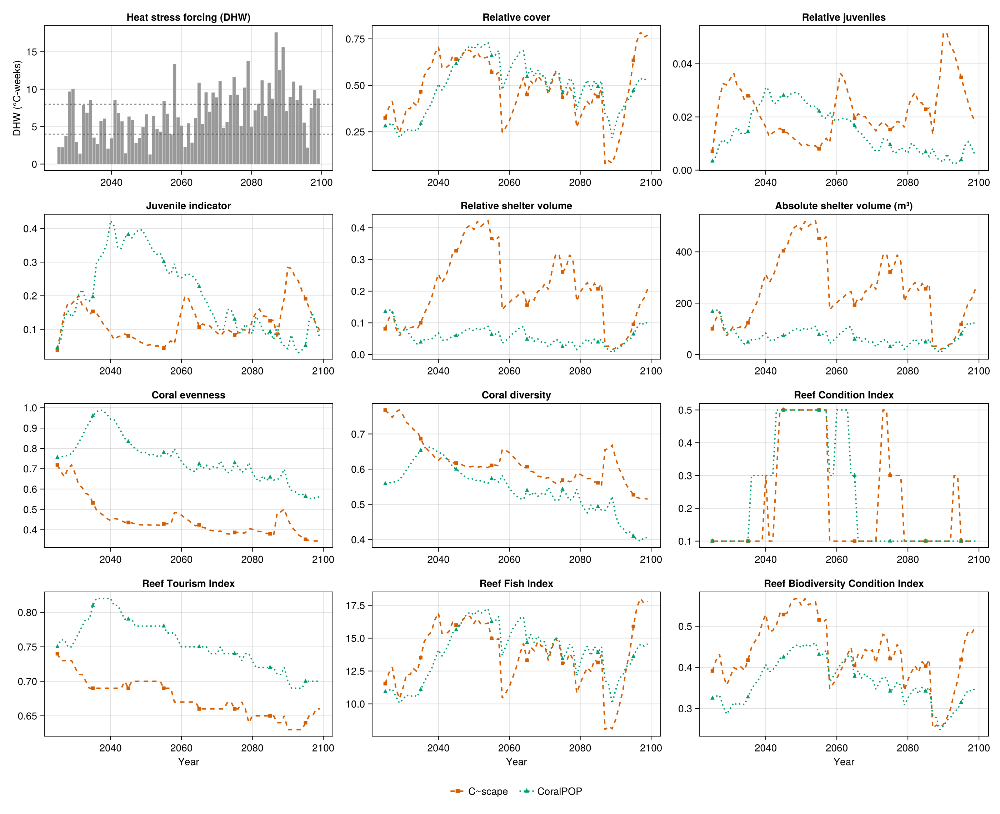
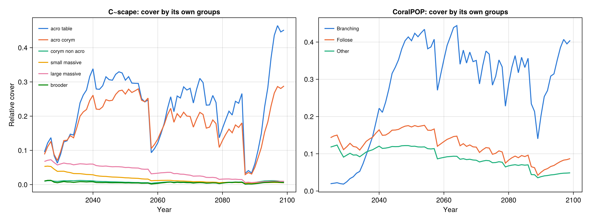

Comparing C~scape and CoralPOP
This is the in-depth version of the C~scape and CoralPOP cookbook examples.
This example applies ADRIAIndicators to the saved output files of two coral models whose outputs look nothing alike: C~scape, an integral-projection model written in R that saves an .rds array of colony counts, and CoralPOP, a Python population model that saves NumPy .npz arrays of colony surface area. Each was run once, with its default parameters, on the same synthetic one-reef domain (SingleReef, 2025-2099) under a strong heat-stress series. The only model-specific work is putting each model's output into the layout ADRIAIndicators expects. Everything after that is identical for both models.
The example runs the models' saved output, not the models themselves. To run it, download the output files and the complete code from the docs/examples/coral_models folder of the ADRIAIndicators.jl repository. The reef is synthetic, so the resulting metrics are illustrative only.
Note: To run the code in this example, CSV.jl, DataFrames.jl, RData.jl, NPZ.jl and CairoMakie.jl should be added to the environment. docs/examples/coral_models/Project.toml has them.
1. Model outputs
Both models were forced with the same heat stress (degree heating weeks, DHW, in °C-weeks) and start from the same initial cover. Neither output file records the area of the reef, which is needed to turn the models' quantities into cover relative to the habitable area, so the reef's total and habitable area are read from a small table.
C~scape
C~scape saves one .rds file per run (Array_scenario_<id>_rep_<rep>_draw_<draw>.rds; here draw_NA). It holds one six-dimensional array. The file stores the names of the dimensions, but RData.load drops them by default, and ADRIAIndicators expects plain arrays anyway, so the dimensions are selected by position, as in this table:
using RData
a = RData.load("data/cscape/Array_scenario_101000100001_rep_1_draw_NA.rds")
size(a) # (76, 1, 2, 6, 14, 107)| Dimension | Length | Meaning |
|---|---|---|
year | 76 | 2024 ... 2099. Slot 1 is the initial state, labelled one year before the first simulated year |
reef_siteid | 1 | sites of the domain |
intervened | 2 | "no" / "yes": the part of each site without and with a coral deployment. Empty here for "yes" |
ft | 6 | coral types: tabular Acropora, corymbose Acropora, corymbose non-Acropora, small massives, large massives, brooders |
enhancement | 14 | classes of additional heat tolerance, (e.g., from genetic modification or selective breeding), labelled -5 to 8. A type's population is the sum over the classes |
value | 107 | slot 1: cover, % of the site area. Slots 2-6: the first five stages, before the size classes. Slots 7-106: the 100 size classes, as numbers of colonies. Slot 107: "lambda", unused - all zero in this output |
The size classes are counts of colonies, so converting them to cover needs the diameter of each class. The diameters, and which classes are juvenile (those without fecundity), belong to the demography of each type and not to the output file, so they are stored in size_classes.rds.
CoralPOP
CoralPOP returns a set of NumPy arrays for each run in .npz format. The dimensions of results is generally in the order of [time ⋅ size bin ⋅ morphology ⋅ site], with site/location always last.
| Array | Dimensions | Meaning |
|---|---|---|
surface_area_m2 | [time ⋅ size bin ⋅ morphology ⋅ site] (75, 20, 3, 1) | planar area of all colonies, m² of the whole reef |
cover_pct | [time ⋅ morphology ⋅ site] | cover, % of the reef area |
benthic_pct, larvae_produced, larvae_received, benthic_columns | not used here |
The 75 rows are the years 2025-2099, row 1 being the initial state. The three morphologies are Branching, Foliose and Other, and the 20 size bins are 5 cm wide.
2. Adapting the outputs to ADRIAIndicators
ADRIAIndicators expects cover relative to the habitable area with dimensions [timesteps ⋅ groups ⋅ sizes ⋅ locations]. Besides the cover, the indicators need the habitable and total area of each location, the colony diameter of each group and size class, the parameters of the planar area model used for shelter volume, and which size classes are juvenile. The complete code is in run_all.jl; run it from its folder.
using CSV, DataFrames
using RData, NPZ
import ADRIAIndicators as AIThe reef's areas and the heat stress are read first.
domain = CSV.read("data/domain/singlereef_domain.csv", DataFrame)
reef_area_m2 = domain.reef_area_m2 # [locations], m², includes non-habitable area
habitable_area_m2 = domain.k_area_m2 # [locations], m²
years = 2025:2099
dhw = CSV.read("data/domain/dhw_member17.csv", DataFrame).dhwC~scape: counts to cover
The first year (the initial state) is dropped, the 100 size-class slots are kept, the two intervened sub-areas and the 14 enhancement classes are added up, and counts are converted to cover: a colony of diameter d cm has a planar area of π(d/200)² m², so cover is count × colony area ÷ habitable area.
cscape_types = ["acro_table", "acro_corym", "corym_non_acro", "small_massive", "large_massive", "brooder"]
size_classes = RData.load("data/cscape/size_classes.rds")
# Colony diameter (cm) and juvenile classes [groups ⋅ sizes]
cscape_diam_cm = permutedims(reduce(hcat, [Float64.(size_classes[t]["meshpoints_diam"]) for t in cscape_types]))
cscape_juvenile = permutedims(reduce(hcat, [Bool.(size_classes[t]["juvenile"]) for t in cscape_types]))
cscape_out = RData.load("data/cscape/Array_scenario_101000100001_rep_1_draw_NA.rds")
# [timesteps ⋅ locations ⋅ groups ⋅ sizes]
counts = dropdims(sum(cscape_out[2:end, :, :, :, :, 7:106]; dims=(3, 5)); dims=(3, 5))
counts = permutedims(counts, (1, 3, 4, 2)) # [timesteps ⋅ groups ⋅ sizes ⋅ locations]
colony_area_m2 = π .* (cscape_diam_cm ./ 200) .^ 2
cscape_cover = counts .* reshape(colony_area_m2, 1, size(colony_area_m2)...) ./
reshape(habitable_area_m2, 1, 1, 1, :)CoralPOP: area to cover
CoralPOP already stores an area, so it is divided by the habitable area and the dimensions are moved into the expected order. The bin diameters are computed from the bin edges, and the first two bins (colonies under 10 cm) are the juveniles.
# NPZ.jl does not support NumPy's unicode string arrays (the `benthic_columns` array in the
# file), so name the arrays to read.
coralpop_output = npzread("data/coralpop/scenario_1.npz", ["surface_area_m2", "cover_pct"])
# The surface area of all colonies [time ⋅ size bin ⋅ morphology ⋅ site], m²
coralpop_area_m2 = coralpop_output["surface_area_m2"]
coralpop_cover = permutedims(coralpop_area_m2, (1, 3, 2, 4)) ./ reshape(habitable_area_m2, 1, 1, 1, :)
# Bins are 5 cm wide. The first two (colonies under 10 cm) are juveniles
bin_width_cm = 5.0
bin_diam_cm = [sqrt(((b - 1) * bin_width_cm)^2 / 2 + (b * bin_width_cm)^2 / 2) for b in 1:20]
coralpop_diam_cm = repeat(reshape(bin_diam_cm, 1, :), 3, 1) # [groups ⋅ sizes]
coralpop_juvenile = falses(3, 20)
coralpop_juvenile[:, 1:2] .= truePlanar area parameters
Shelter volume needs the parameters of a log-log planar area model for each group. Both models use the parameters of the five functional groups of ADRIA, which come from Aston et al. (2022), and the only decision is which row each model's group takes. Here CoralPOP's Branching, Foliose and Other morphologies take the corymbose Acropora, tabular Acropora and large massives rows, and C~scape's brooders the corymbose non-Acropora row.
# Parameters (intercept b, coefficient a) of the log-log planar area model log(S) = b + a log(x)
# for each of ADRIA's functional groups, as in ADRIA.jl's `planar_area_params()`. They come from
# Fig 2B of Aston et al. (2022), https://doi.org/10.3389/fmars.2022.854395 (corymbose non-Acropora
# uses the branching Pocillopora values). Rows: tabular Acropora, corymbose Acropora,
# corymbose non-Acropora, small massives, large massives
adria_planar_area = [
-8.95 2.80
-9.13 2.94
-8.90 2.94
-8.87 2.30
-8.87 2.30
]
# Each group takes one of the rows above, the same for every size class [groups ⋅ sizes ⋅ 2]
planar_area_params(rows, n_sizes) = repeat(reshape(adria_planar_area[rows, :], length(rows), 1, 2), 1, n_sizes, 1)
cscape_planar_area = planar_area_params([1, 2, 3, 4, 5, 3], 100) # brooders use corymbose non-Acropora
coralpop_planar_area = planar_area_params([2, 1, 5], 20) # Branching, Foliose, Other3. Indicators
From here on nothing is specific to either model. The cover collapses the group and size dimensions; shelter volume and juveniles need the diameters, planar area parameters and juvenile flags; diversity works on the cover of each group; and the composite indices combine these metrics. Neither model has rubble, so the indices that do not need it are used. Note that the shelter volume functions take colony diameters in cm, whereas the juvenile indicator takes them in m.
# Reference colony defining the maximum shelter volume: (diameter cm, intercept, coefficient)
reference = (95.0, -8.95, 2.80)
max_juvenile_density = 15.0 # individuals/m²
function model_indicators(rel_cover, diam_cm, planar_area, is_juvenile)
# Cover [timesteps ⋅ locations]
relative_cover = AI.relative_cover(rel_cover)
ltmp_cover = AI.ltmp_cover(rel_cover, habitable_area_m2, reef_area_m2)
# Shelter volume, summed over groups and sizes [timesteps ⋅ locations]
rsv = AI.relative_shelter_volume(rel_cover, diam_cm, planar_area, habitable_area_m2, reference)
relative_shelter_volume = clamp.(dropdims(sum(rsv; dims=(2, 3)); dims=(2, 3)), 0.0, 1.0)
asv = AI.absolute_shelter_volume(rel_cover, diam_cm, planar_area, habitable_area_m2)
absolute_shelter_volume = dropdims(sum(asv; dims=(2, 3)); dims=(2, 3))
# Diversity, from the cover of each group [timesteps ⋅ groups ⋅ locations]
relative_loc_taxa_cover = AI.relative_loc_taxa_cover(rel_cover)
coral_diversity = AI.coral_diversity(relative_loc_taxa_cover)
coral_evenness = AI.coral_evenness(relative_loc_taxa_cover)
# Juveniles. Mean colony diameters are expected in m here, whereas the shelter volume
# functions take cm.
relative_juveniles = AI.relative_juveniles(rel_cover, is_juvenile)
juvenile_indicator = AI.juvenile_indicator(
rel_cover, is_juvenile, habitable_area_m2, diam_cm ./ 100, max_juvenile_density
)
# Neither model has rubble, so the indices that do not need it are used
reef_condition_index = AI.reef_condition_index(ltmp_cover, relative_shelter_volume, juvenile_indicator)
reef_tourism_index = AI.reef_tourism_index_no_rubble(
ltmp_cover, coral_evenness, relative_shelter_volume, relative_juveniles
)
reef_fish_index = AI.reef_fish_index(relative_cover)
reef_biodiversity_condition_index = AI.reef_biodiversity_condition_index(
relative_cover, coral_diversity, relative_shelter_volume
)
return (;
relative_cover, relative_juveniles, juvenile_indicator, relative_shelter_volume,
absolute_shelter_volume, coral_evenness, coral_diversity, reef_condition_index,
reef_tourism_index, reef_fish_index, reef_biodiversity_condition_index
)
end
cscape = model_indicators(cscape_cover, cscape_diam_cm, cscape_planar_area, cscape_juvenile)
coralpop = model_indicators(coralpop_cover, coralpop_diam_cm, coralpop_planar_area, coralpop_juvenile)Each result is an array of [timesteps ⋅ locations], e.g. cscape.reef_fish_index[end, 1]. With a single location, no aggregation over locations is needed; for a domain, AI.scenario_metric weights each location by its habitable area.
4. Checking the conversions
A conversion that mishandles a unit does not fail, it silently returns wrong numbers. Each model also stores its own total cover, in different units (C~scape in % of the site area, CoralPOP in % of the reef area). Converting that to relative cover and comparing it with the cover calculated from the colony data catches such mistakes:
cscape_native = dropdims(sum(cscape_out[2:end, :, :, :, :, 1]; dims=(3, 4, 5)); dims=(3, 4, 5)) ./ 100 .*
reef_area_m2' ./ habitable_area_m2'
coralpop_pct = coralpop_output["cover_pct"] # [time ⋅ morphology ⋅ site]
coralpop_native = dropdims(sum(coralpop_pct; dims=2); dims=2) ./ 100 .* reef_area_m2' ./ habitable_area_m2'
for (name, model, native) in (("C~scape", cscape, cscape_native), ("CoralPOP", coralpop, coralpop_native))
difference = abs.(model.relative_cover .- native)
println("$name: all years $(maximum(difference)), 2026-2099 $(maximum(difference[2:end, :]))")
endC~scape: all years 7.771561172376096e-16, 2026-2099 7.771561172376096e-16
CoralPOP: all years 1.1948430049812941e-6, 2026-2099 3.3306690738754696e-16The two agree to rounding. The exception is CoralPOP's first year, where its cover_pct and surface_area_m2 differ slightly (by about 1e-6 of the habitable area); the reason was not investigated.
5. Results
The heat stress, and each indicator of both models over time (plotted at the end of run_all.jl):

Values in 2099. The Reef Condition Index takes only the values 0.1, 0.3, 0.5, 0.7 and 0.9, so the two models can have the same score:
| Metric | C~scape | CoralPOP |
|---|---|---|
| Relative cover | 0.770 | 0.540 |
| Relative juveniles | 0.0177 | 0.0054 |
| Juvenile indicator | 0.097 | 0.073 |
| Relative shelter volume | 0.207 | 0.103 |
| Absolute shelter volume (m³) | 255 | 127 |
| Coral evenness | 0.344 | 0.561 |
| Coral diversity | 0.515 | 0.406 |
| Reef Condition Index | 0.1 | 0.1 |
| Reef Tourism Index | 0.66 | 0.70 |
| Reef Fish Index | 17.8 | 14.6 |
| Reef Biodiversity Condition Index | 0.497 | 0.350 |
Cover of each model's own functional groups helps to read the diversity and evenness differences:

- Both models follow the heat stress. Cover rises to 0.65-0.75 of the habitable area by 2050-2054, then drops after the strong events of 2058 and 2087-2089. C~scape loses more in each event (to 0.25, then 0.08) than CoralPOP (to 0.48, then 0.22).
- They recover differently: C~scape's cover returns to 0.77 by 2099, carried by tabular and corymbose Acropora, whereas CoralPOP's reaches 0.54, mostly as branching colonies.
- Indicators that depend on size and group differ most. Shelter volume is higher in C~scape for most of the run, the juvenile indicator is higher in CoralPOP in most years until about 2075, and evenness is lower in C~scape because two of its six groups carry nearly all cover.
- This is one default run of each model: it shows each model's trajectory, not its uncertainty.
6. Pitfalls
- Know what the model stored. Counts (C~scape), m² of colony area (CoralPOP), or cover in % of the site, reef or habitable area. ADRIAIndicators needs a proportion of the habitable area. Check against the model's own cover, as in section 4.
- Units. Shelter volume takes diameters in cm and the juvenile indicator in m.
- The time axis. C~scape's first slot is the initial state (2024), and its 2025 is already the state after one simulated year, whereas CoralPOP's first row is the initial state (2025). Here C~scape's first slot is dropped so that both cover 2025-2099; make a deliberate choice in your own comparison.
- Juvenile definitions are model specific (C~scape: classes without fecundity, up to 2.7-12.4 cm depending on the type; CoralPOP: colonies under 10 cm), and the largest juvenile diameter sets the juvenile indicator's scale.
- Different groups give different evenness and diversity. C~scape has six coral types, CoralPOP three growth forms. Compare shapes, or map both onto common groups first.
- Reading the files.
RData.loadreturns the C~scape array without its dimension names, andNPZ.jldoes not support NumPy's unicode string arrays, which CoralPOP's files include, so name the arrays you need:npzread(file, ["surface_area_m2"]).